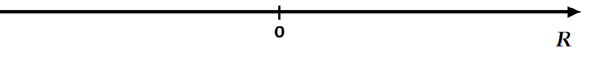
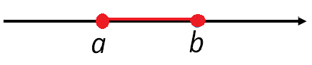
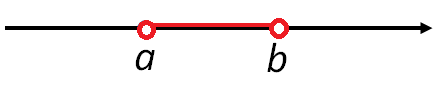
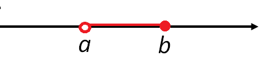

Matemáticas
Auditoría e Ingeniería en Control de Gestión
Contador Público y Auditor

Conjunto de los Números Reales
El conjunto de los números reales, \(\mathbb{R}\), es la unión del conjunto de los números racionales, (por lo tanto contiene a los números naturales y enteros), y de los números irracionales. Es decir: \[\mathbb{R}=\mathbb{Q} \cup \mathbb{Q}^c.\]

Recta Real
Los números reales pueden ser representados por puntos sobre una recta. Se escoge un punto de referencia, llamado origen, que corresponde al \(0\).

Los números reales son ordenados.
Decimos que “\(a\) es menor que \(b\)” y escribimos \(a< b\), si \(b-a\) es un número positivo.
Geométricamente, esto significa que \(a\) está a la izquierda de \(b\) en la recta numérica,

También podemos decir que “\(b\) es mayor que \(a\)” y escribimos \(b>a\).

Intervalos
Sean \(a\), \(b\) números reales tales que \(a<b\). Los siguientes subconjuntos de \(\mathbb{R}\) son llamados Intervalos.
\(\displaystyle [a,b] = \{ x \in \mathbb{R} \, : \, a \leq x \leq b \} \qquad\)

\(\displaystyle ]a,b[ = \{ x \in \mathbb{R} \, : \, a < x < b \} \qquad\)

\(\displaystyle [a,b[ = \{ x \in \mathbb{R} \, : \, a \leq x < b \} \qquad\)

\(\displaystyle ]a,b] = \{ x \in \mathbb{R} \, : \, a < x \leq b \} \qquad\)


Intervalos
\(\displaystyle [a,+\infty [ = \{ x \in \mathbb{R} \, : \, x \geq a \} \qquad\)

\(\displaystyle ]a,+\infty[ = \{ x \in \mathbb{R} \, : \, x > a \} \qquad\)

\(\displaystyle ]-\infty ,b] = \{ x \in \mathbb{R} \, : \, x\leq b \} \qquad\)

\(\displaystyle ]-\infty , b[ = \{ x \in \mathbb{R} \, : \, x < b \} \qquad\)